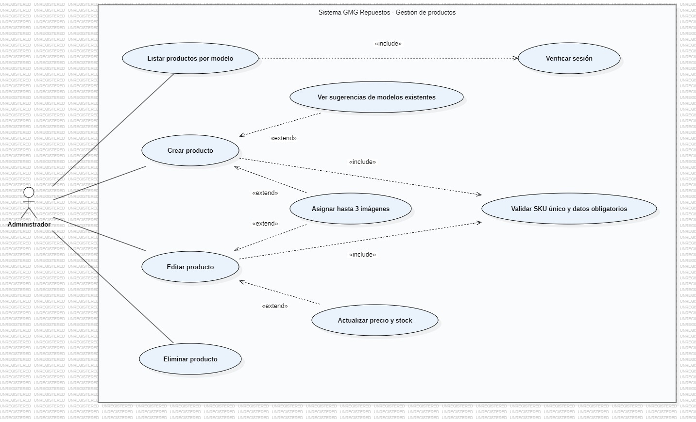

+1 Vista de Escenarios
Panel Administrador · Gestión de Productos (admin/productos.php)
Sistema: GMG Repuestos (gmgrepuestos.cl) · Página / módulo: Panel Administrador · Gestión de Productos (admin/productos.php)
Archivos fuente analizados: admin/productos.php, backend/modelos.php, backend/auth.php, backend/config.php, css/admin.css
Audiencia / enfoque: Casos de uso e iteraciones principales del sistema
Explicación teórica
La vista de escenarios es el "+1" del modelo de Kruchten: no describe una estructura nueva, sino que une y valida las otras cuatro vistas mediante los casos de uso más importantes. Cada escenario muestra qué actor inicia una interacción, qué objetivo persigue y qué funcionalidades del sistema participan, de modo que cualquier decisión tomada en las vistas lógica, de desarrollo, de procesos o física pueda rastrearse hasta una necesidad concreta del usuario.
Nota de notación: el diagrama de casos de uso se elaboró en StarUML con notación UML estándar: los actores se dibujan fuera del límite del sistema, los casos de uso como elipses dentro del rectángulo del sistema y las relaciones «include» / «extend» como flechas punteadas rotuladas.
Explicación técnica aplicada a esta página
En esta página el administrador mantiene el catálogo: crea, edita y elimina repuestos con nombre, modelo, año,
motor, categoría, SKU, código OEM, precio, stock y hasta tres URLs de imagen. El listado se muestra por pestañas de
modelo (una a la vez) y el campo modelo sugiere los existentes. Como la tienda y el chatbot leen directamente de la
tabla productos, cualquier cambio aquí se refleja al instante en el catálogo público y en las respuestas del
Asistente Virtual; un modelo nuevo aparece solo en el acordeón de la tienda.
Diagrama de Casos de Uso
